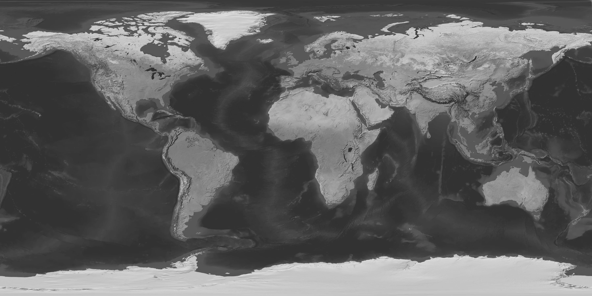
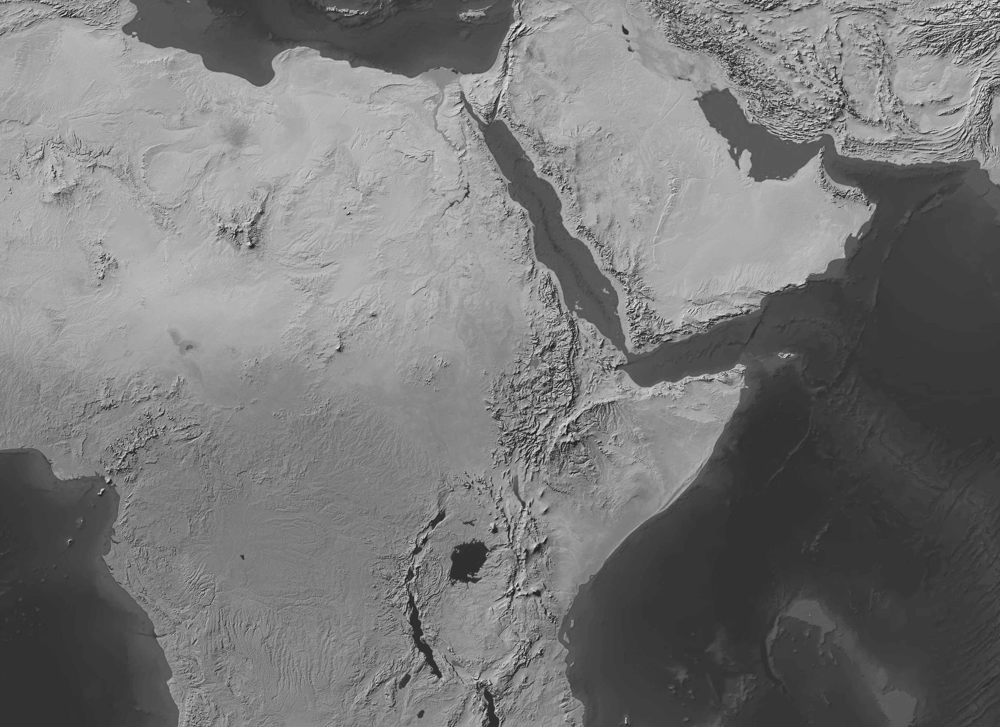

Global asylum network

East Africa and neighbouring countries
Select a country on the map or in the index to see its refugee population. Drag or use the arrow keys to pan the world map. Scroll, pinch, or use the plus and minus keys to zoom. Press Home to reset the map and Escape to clear the selection.